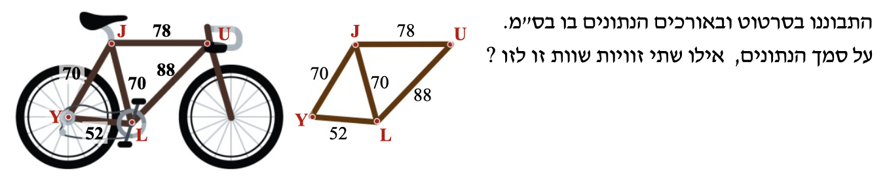
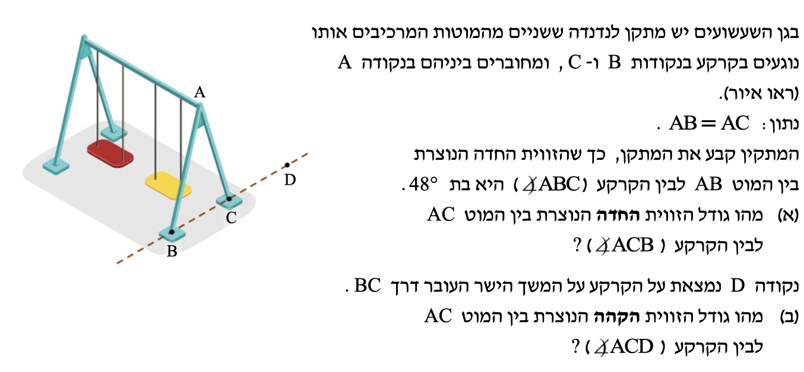

לפניכם איור של כביש המקיף גינה ציבורית. צורת הגינה היא משולש שווה-שוקיים עם 3 צמתים בנקודות N, B ו-E. מכונית נסעה מנקודה B לאורך הקטעים: BE, EN, NB. כשהגיעה לנקודה B, שוב נסעה לאורך BE (לאורך הקטע BE). המרחק שעברה המכונית מ-B ל-E שווה למרחק שעברה מ-E ל-N. באילו צמתים הזוויות שבהן המכונית פונה שוות זו לזו?
שאלה 2 — מסגרת אופניים

התבוננו בסרטוט ובאורכים הנתונים בו (ס"מ). על סמך הנתונים — אילו שתי זוויות שוות זו לזו?
שאלה 3 — נדנדות בגן שעשועים

בגן השעשועים יש מתקן לנדנדה. שני המוטות המרכיבים אותו נוגעים בקרקע בנקודות B ו-C, ומחוברים ביניהם בנקודה A. נתון: AB = AC. הזווית החדה הנוצרת בין המוט AB לבין הקרקע (∠ABC) היא בת 48°.
(א) מהו גודל הזווית החדה הנוצרת בין המוט AC לבין הקרקע (∠ACB)?
(ב) נקודה D נמצאת על הקרקע על המשך הישר העובר דרך BC. מהו גודל הזווית הקהה הנוצרת בין המוט AC לבין הקרקע (∠ACD)?